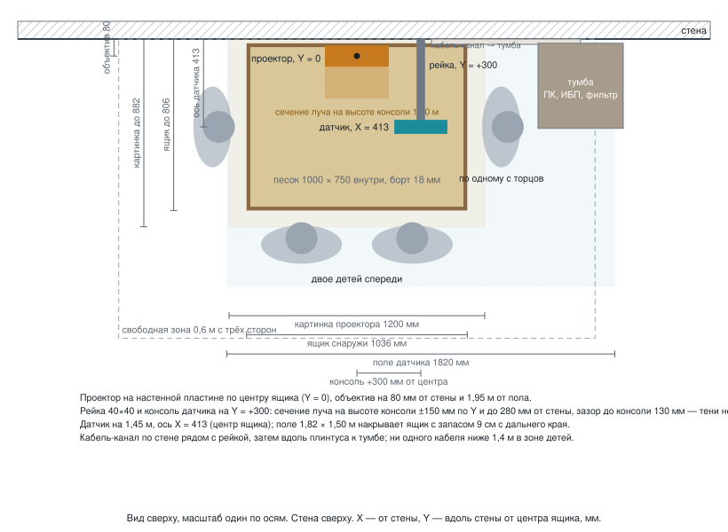

Размещение у стены: расстояния и размер песочницы
Решения заказчика от 22.09.2026: датчик Kinect v2 (Xbox One) — базовый, вынесен на 450 мм от стены (над центром ящика его вешать нельзя — там луч проектора); Kinect v1 — более дешёвая альтернатива; проектор среднего сегмента; крепление только к стене; потолок натяжной. Вид сбоку в масштабе: img/wall-placement.svg, вид сверху: img/wall-plan.svg. Все размеры от плоскости стены (ось X, перпендикулярно стене) и от пола (ось Z). Вдоль стены — ось Y, ноль в центре ящика.
{kind=link}


Интерактивная 3D-проверка удобства для ребёнка (возраст, поза, сторона, карта досягаемости, луч, тени): файл wall-layout-3d.html — открыть в браузере локально.
- 1. Исходные данные
- 2. Ящик
- 3. Датчик глубины: Kinect v2 на 450 мм от стены
- 4. Дешёвая альтернатива: Kinect v1
- 5. Проектор
- 6. Формат крепления: рейка на стене, Г-образная консоль, пластина проектора
- 7. Размер песочницы: какие варианты даёт наше оборудование
- 8. Кабель-менеджмент
- 9. Почему у стены удобно
- 10. Что измерить перед монтажом
1. Исходные данные
| Параметр | Принято | Уточнить |
|---|---|---|
| Ящик, внутренний размер | 1000 × 750 мм, длинная сторона вдоль стены, стоит на полу; расчёты ниже даны для него | размер ещё не выбран: варианты от 800 × 500 до 1400 × 800 и рекомендация 1200 × 600 — раздел 7 |
| Фанера | 18 мм | |
| Борт | 250 мм над дном; верх борта 268 мм от пола | |
| Песок | 130 мм слоя, поверхность 150 мм от пола | |
| Зазор ящик–стена | 20 мм (под плинтус) | толщина плинтуса |
| Датчик, базовый | Kinect v2 (Xbox One): 512 × 424 точки, поле 70° × 60°, 0,5–4,5 м, USB 3.0 + свой блок питания (адаптер Kinect Adapter для ПК) — раздел 3 | |
| Датчик, дешёвая альтернатива | Kinect v1 (Xbox 360): 640 × 480, поле 57° × 43°, 0,8–4 м, USB 2.0 + блок 12 В — раздел 4 | берут, когда надо уложиться в меньшие деньги |
| Компьютер | покупаем; материнская плата с USB 3.0 на контроллере Intel или Renesas, датчик в порт напрямую, без хаба | модель ПК и видеокарта |
| Проектор | средний сегмент: 3LCD или DLP, XGA 1024 × 768 (или WXGA 1280 × 800), 3300–4000 лм, обычный объектив с зумом 1,3–1,6 (расчёт при 1,5), смещение объектива 100 %, разрешена установка объективом вниз | модель, отношение, смещение, допуск на установку объективом вниз, где выдув |
| Потолок | натяжной, не ниже 2,35 м; к потолку ничего не крепим и ничего рядом не греем | высота |
| Стена | бетон или кирпич | материал (гипсокартон — раздел 6) |
2. Ящик
| Величина | Формула | Значение |
|---|---|---|
| Наружная глубина (от стены) | 750 + 2 × 18 | 786 мм |
| Наружная длина (вдоль стены) | 1000 + 2 × 18 | 1036 мм |
| Ближняя наружная стенка | зазор | 20 мм от стены |
| Дальняя наружная стенка | 20 + 786 | 806 мм от стены |
| Центр ящика | 20 + 786 / 2 | X = 413 мм |
| Внутренняя зона песка | 38 … 788 мм от стены |
Центр ящика нужен софту для маски песка; положение датчика он не задаёт — датчик стоит на 450 мм от стены при любом размере короба (раздел 3).
Плинтус: если он толще 20 мм, зазор = толщине плинтуса, и все X ниже растут на ту же величину. Либо в задней стенке ящика снизу выбирается паз под плинтус, тогда зазор 0 и центр X = 393 мм.
3. Датчик глубины: Kinect v2 на 450 мм от стены
Базовый датчик — Kinect v2 (Xbox One). Он меряет глубину временем полёта света: сам подсвечивает сцену вспышками и считает, за сколько свет вернулся. Поэтому он не теряет крутые склоны и борта там, где инфракрасная сетка v1 рассыпается, и даёт более ровную высоту.
| Величина | Формула | Значение |
|---|---|---|
| Высота над песком | правило «низ железа не ниже 1,40 м»: низ корпуса ≈ 1,42 м | 1,30 м |
| Высота от пола (ось датчика) | 0,15 + 1,30 | 1,45 м |
| Положение по X | фиксированный вынос: над центром ящика вешать нельзя — там луч проектора (ниже в этом разделе), а широкому полю v2 центровка и не нужна | 450 мм от стены при любом размере ящика |
| Положение по Y (вдоль стены) | по центру ящика вдоль стены; в сторону сдвинуты рейка и продольная часть консоли, а не датчик | 0 |
| Зона вдоль стены | 2 × 1,30 × tg 35° | 1,82 м (ящик 1,036 — запас 39 см с каждой стороны) |
| Зона от стены | 2 × 1,30 × tg 30° | 1,50 м: от −300 мм (за стеной, в кадр попадает стена) до +1200 мм |
| Точка на песке | 1,82 / 512 | 3,6 мм (поперёк ящика 1,2 м — 337 точек) |
| Шум по высоте | на 1,3 м | ≈ 2 мм — горизонтали с шагом 1 см стоят спокойно |
| Стена в кадре | ниже Z = 1,45 − X_датчика / tg 30° | при оси датчика X = 450 — ниже 0,67 м от пола. Эту часть кадра софт обрезает |
| Задержка самого датчика | 30 кадров в секунду | ≈ 60–70 мс |
| Общий бюджет отклика | датчик + расчёт + проектор | 130–190 мс при цели ≤ 150 мс |
| Драйверы | этап 0 — Windows, дальше Linux | Kinect SDK 2.0 (Windows) или libfreenect2 (Linux) |
| Подключение | USB 3.0 и свой блок питания (адаптер Kinect Adapter для ПК) | порт на контроллере Intel или Renesas, датчик в порт напрямую, без хаба |
Паспортное: 512 × 424 точки, поле зрения 70° × 60°, дальность 0,5–4,5 м.
Почему не над центром ящика. Луч проектора по X на высоте 1,45 м занимает 58…303 мм от стены. Корпус датчика глубиной 67 мм при оси на 450 мм начинается с 416 мм — до края луча остаётся 114 мм. Если же повесить датчик над центром ящика глубиной 600 (X = 338 мм), передняя грань корпуса окажется на 305 мм при крае луча 303 мм: запас 2 мм, то есть фактически тень на песке — и это при объективе ровно на 80 мм от стены; при допустимых 110 мм луч доходит до 323 мм и датчик оказывается уже внутри луча. Раньше, с узким полем Kinect v1 (57° × 43°), датчик обязан был висеть точно над центром ящика, иначе не видел весь песок. У v2 поле 70° × 60° и зона 1,82 × 1,50 м, поэтому центрировать его больше не нужно: по глубине зона идёт от −300 до +1200 мм, ящик глубиной 600 занимает 38…638 мм, глубиной 750 — 38…806 мм, оба помещаются целиком. Ближний край песка у стены датчик видит под углом около 18° от вертикали — это нормально, калибровка это учитывает.
Почему 1,45 м, а не ниже. Чтобы накрыть картинку проектора 1,24 × 0,95 м, датчику хватило бы 1,04 м от пола. Так вешать нельзя: на этой высоте ребёнок достаёт до датчика головой, и действует правило «низ железа не ниже 1,40 м». На 1,45 м низ корпуса как раз ≈ 1,42 м, а поле зрения от подъёма только выигрывает: 1,82 × 1,50 м против 1,30 × 0,95 у v1.
Чтобы уложиться в 150 мс: игровой режим проектора, сглаживание глубины на 1–2 кадра, отсечение рук без дополнительной задержки, никакой цифровой трапеции, датчик в USB напрямую.
Компьютер покупаем, поэтому требование к покупке жёсткое: материнская плата с USB 3.0 на контроллере Intel или Renesas. На контроллерах AMD и через дешёвые хабы Kinect v2 часто не заводится вообще — это известная беда именно этого датчика.
Корпус 249 × 66 × 67 мм ставится длинной стороной вдоль стены, объектив глубины над X = 450; по X корпус занимает 416–484 мм, низ корпуса ≈ 1,42 м. Стена и плинтус в кадре — норма, но они должны быть матовыми: глянец даёт блики и ошибки дальности.
Консоль Г-образная, датчик под её поперечиной:
| Часть | Где | Зачем так |
|---|---|---|
| Рейка на стене | ось Y = +300 мм от центра; низ 1,30 м, верх 2,30 м | сдвинута от центра, чтобы не мешать проектору на Y = 0 |
| Продольная часть (вынос от стены) | от рейки в комнату, низ на высоте 1,55 м, по X до 450 мм, на Y = +300 | вне луча проектора по Y |
| Поперечина | на той же X = 450 (корпус 430–470), от Y = +300 к Y = 0 | целиком вне луча по X: на высоте поперечины луч кончается на 258 мм |
| Площадка датчика | под концом поперечины | датчик на X = 450 (при любом размере ящика), Y = 0, ось объектива 1,45 м |
Почему именно так. На высоте консоли (низ поперечины 1,55 м) луч проектора доходит до 258 мм от стены и занимает ±133 мм по Y от центра. Продольная часть идёт по Y = +300 мм и остаётся вне луча с запасом 15 см: даже на 1,38 м, ниже всего узла, луч по Y не шире ±189 мм. Поперечина идёт по X = 450 (корпус 430–470) — вся дальше края луча, запас 17 см; на высоте 1,50 м луч занимает 60…280 мм от стены. Датчик (X 416–484) на своей высоте 1,45 м тоже вне луча: там луч занимает 58…303 мм, запас 114 мм. Прямая консоль от стены к центру на Y = 0 прошла бы сквозь луч и дала бы на песке тёмную полосу ≈ 16 см через весь ящик.
Почему низ поперечины на 1,55 м, а не на 1,50 м. Верх корпуса датчика — 1,4835 м (ось 1,45 плюс половина высоты корпуса 67 мм). Между ним и низом поперечины надо уместить пластину 3 мм, шаровую головку с винтом ¼″ (это 40–60 мм) и люльку-хомут — всего около 6 см. При 1,50 м там оставалось бы 16 мм, узел просто не собрать; при 1,55 м остаётся 66 мм — как раз. Геометрию подъём только улучшает: чем выше, тем ближе к стене проходит луч, и зазоры растут.
Запас по лучу у вынесенного датчика большой: даже если объектив проектора отодвинуть на 180 мм от стены, луч на высоте 1,45 м дойдёт только до 370 мм, а корпус датчика начинается с 416 мм — остаётся ещё 46 мм. Кронштейн проектора всё равно берём с коротким выносом (раздел 5): объектив на 80 мм от стены — так картинка ложится в ящик по расчёту.
Важно: весь этот запас держится на том, что ось датчика — 450 мм от стены. Величина фиксированная, к размеру ящика она не привязана. Если подвинуть датчик к стене вслед за центром ящика глубиной 600 (X = 338), корпус займёт X 305–371, а луч на высоте 1,45 м доходит до 303 мм — остаётся 2 мм, и то лишь при объективе ровно на 80 мм от стены. При объективе на 110 мм (допуск раздела 5) луч доходит до 323 мм, и датчик оказывается внутри луча: на песке появится тёмная полоса шириной ≈ 65 мм вдоль дальнего борта, примерно в 810 мм от стены (тень от предмета на высоте 1,45 м увеличивается в 3,6 раза). Поэтому вынос датчика и поперечины от размера ящика не зависит — раздел 7.
4. Дешёвая альтернатива: Kinect v1
Kinect v1 (Xbox 360) заметно дешевле и его проще найти б/у. Конструкция та же: тот же вынос 450 мм от стены, та же Г-образная консоль, опущенная на 10 см. Поле у v1 узкое, запасы по краям кадра меньше, но ящик он накрывает.
| Величина | Формула | Значение |
|---|---|---|
| Высота над песком | v1 шумит выше 1,5 м, ближе 0,8 м не видит; берём | 1,20 м |
| Высота от пола | 0,15 + 1,20 | 1,35 м |
| Положение | тот же вынос, что у v2 | X = 450, Y = 0 |
| Консоль | та же Г-образная, низ выноса на 1,45 м (под монтажный стек: пластина, головка, люлька) | луч на 1,45 м: до 303 мм от стены, ±167 мм по Y — консоль вне луча |
| Зона вдоль стены | 2 × 1,20 × tg 28,5° | 1,30 м (ящик 1,036 — запас 13 см с каждой стороны) |
| Зона от стены | 2 × 1,20 × tg 21,5° | 0,95 м: от −23 до 923 мм (ящик до 806 — запас 12 см) |
| Точка на песке | 1,30 / 640 | 2,0 мм |
| Шум по высоте | на 1,2 м | ≈ 3 мм |
| Стена в кадре | ниже Z = 1,35 − 0,450 / tg 21,5° | ниже 0,21 м от пола — только зона плинтуса, обрезается маской ящика |
| Луч у датчика | на 1,35 м до X = 347 мм; датчик с 417 мм | вне луча, зазор 7 см |
| Подключение | USB 2.0 и блок 12 В через адаптер-переходник | в порт напрямую, без хаба; адаптер и блок — в тумбе |
Корпус ≈ 280 × 65 × 40 мм (без подставки), длинной стороной вдоль стены. Моторный наклон подставки выставляется в 0° и в софте не используется.
Честное сравнение:
| Kinect v1 | Kinect v2 | |
|---|---|---|
| Точка на песке | 2,0 мм — мельче | 3,6 мм |
| Шум по высоте | ≈ 3 мм | ≈ 2 мм — чище |
| Крутые склоны и борта | инфракрасная сетка их теряет | видит: меряет временем полёта света |
| Общий бюджет отклика | 120–180 мс | 130–190 мс |
| Шина и ПК | USB 2.0, к компьютеру нетребователен | USB 3.0, только контроллер Intel или Renesas |
| Зона охвата | 1,30 × 0,95 м — впритык к ящику | 1,82 × 1,50 м — с запасом |
Для песка этот обмен выгоден в сторону v2: детали рельефа, которые лепит ребёнок, крупнее 3,6 мм, а вот рваный край на склоне и пропавший борт видно сразу. Поэтому базовый — v2, а v1 остаётся вариантом, когда нужно уложиться в меньшие деньги.
Ещё одно: на 1,35 м от пола низ корпуса v1 оказывается на ≈ 1,33 м — ниже правила «низ железа не ниже 1,40 м». Если берут v1, датчик поднимают на 1,42 м от пола (зона 1,38 × 1,00 м, 2,2 мм на точку; низ выноса тогда на 1,52 м) либо закрывают площадку кожухом.
5. Проектор
Проектор среднего сегмента с обычным объективом. Короткофокусные модели и PS502X не рассматриваем: с высоты 1,8 м над песком короткофокусный размажет свет далеко за ящик.
Обозначения: T — проекционное отношение, W — ширина картинки, H = 0,75 W для 4:3, D — расстояние от объектива до песка по вертикали, o — смещение объектива (1,0 = 100 %: нижний край картинки на уровне оси объектива).
Формулы:
D = T × W
угол ближнего края от оси: a1 = atan((o − 1) × H / D)
угол дальнего края от оси: a2 = atan(o × H / D)
наклон к стене, чтобы ближний край лёг в основание стены:
θ = atan(x_объектива / D) + a1
дальний край на песке: X_дальн = x_объектива + D × tg(a2 − θ)Принято: T = 1,5, W = 1,2 м (ящик 1,036 плюс 8 см запаса с каждой стороны вдоль стены), H = 0,9 м, o = 1,0. Зум 1,3–1,6 на той же высоте даёт ширину 1,13–1,38 м, так что 1,2 м достижима на любой модели этого класса.
| Величина | Значение |
|---|---|
| D над песком | 1,5 × 1,2 = 1,80 м |
| Объектив от пола | 0,15 + 1,80 = 1,95 м |
| Объектив по X | 80 мм от стены (корпус толщиной 100 мм, зазор до стены 30 мм); не дальше 110 мм — дальше растёт наклон и уезжает дальний край картинки (до датчика на 450 мм луч не достаёт и при 180 мм, раздел 3) |
| Ориентация | объективом вниз, дном к стене, «верх» корпуса от стены |
| Наклон к стене | atan(0,08 / 1,8) = 2,5° |
| Картинка на песке от стены | 0 … 882 мм (ящик 20 … 806 — накрыт, запас 7,6 см на дальнем краю) |
| Картинка вдоль стены | 1,2 м, центр над Y = 0 |
| Пиксель на песке | 1,2 / 1024 = 1,2 мм |
| Освещённость при 3300–4000 лм | 3300 … 4000 / (1,2 × 0,9) ≈ 3000–3700 лк |
| Луч на высоте консоли (низ 1,55 м) | до X = 258 мм от стены, ±133 мм по Y — вынос и поперечина вне луча |
| Луч на высоте датчика (1,45 м) | 58 … 303 мм от стены; корпус датчика с 416 мм (ось 450) — вне луча, запас 114 мм; при объективе на 110 мм луч доходит до 323 мм, запас 93 мм |
| Разнос датчик–проектор по X | 450 − 80 = 370 мм (обычные 250–350 мм чуть превышены — это плата за вынос датчика из луча; на тени от рук разнос не влияет) |
| Верх корпуса проектора | 1,95 + 0,25 + кронштейн 0,08 ≈ 2,28 м → натяжной потолок не ниже 2,35 м |
Смещение объектива у реального проектора — из паспорта. Что меняется:
| Смещение o | Наклон θ | Дальний край | Примечание |
|---|---|---|---|
| 0,9 (90 %) | 0° | 890 мм | без наклона, объектив на 80 мм |
| 1,0 (100 %) | 2,5° | 882 мм | расчётный вариант |
| 1,1 (110 %) | 5,4° | 859 мм | запас на дальнем краю 5 см |
| 0,5 (объектив по центру картинки) | — | — | для этого объекта не подходит: проектор пришлось бы вешать над центром ящика, то есть в зоне консоли и датчика. Такие модели (короткофокусные и часть с центральным объективом) не берём |
Натяжной потолок и высота
| Потолок | Решение |
|---|---|
| ≥ 2,35 м | расчётный вариант, верх корпуса 2,28 м, до полотна ≥ 7 см |
| 2,25–2,35 м | объектив на 1,85 м, зум на отношение 1,4: картинка 1,21 м, наклон 2,7°, дальний край 890 мм, верх корпуса 2,18 м |
| < 2,25 м | проектор горизонтально на стене и зеркало 45° под ним; объектив у зеркала — те же 1,8 м пути луча до песка |
- К потолку ничего не крепим и не подводим.
- При установке объективом вниз дном к стене задняя стенка корпуса смотрит в потолок, «верх» — в комнату. Выдув горячего воздуха должен быть сбоку корпуса и уходить вдоль стены. Модель с задним выдувом греет полотно — не берём, либо ставим её горизонтально с зеркалом.
- Забор воздуха не должен упираться в стену: зазор корпус–стена 30 мм и больше; если забор на днище — зазор 50 мм (объектив 100 мм от стены, ещё в допуске).
- Если паспорт запрещает установку объективом вниз (часть ламповых) — модель с допуском «360°» либо зеркало.
Режим быстрого отклика
- Игровой режим / режим низкой задержки включён.
- Автокоррекция трапеции, интерполяция кадров, шумоподавление, «улучшайзеры» — выключены. Геометрию картинки делает софт по матрице калибровки, проектор получает уже готовый кадр.
- Ручной фокус, зум выставлен один раз при калибровке и помечен маркером.
- HDMI напрямую от видеокарты, без переходников-конвертеров.
- Проверка задержки —
pipeline.md, раздел «Задержка».
6. Формат крепления: рейка на стене, Г-образная консоль, пластина проектора
Один узел на стене плюс пластина проектора. Ничего не сверлим в потолок и не ставим на пол.
вид сбоку (стена слева, X вправо) вид спереди (от ребёнка к стене, Y вправо)
2,30 ─┬ верх рейки Y = 0 (центр ящика) Y = +300
2,25 ─● анкер 3 ▐▌ проектор ┬ 2,30
1,95 ─ объектив, 80 мм от стены ▐▌ на своей пластине ● 2,25
1,80 ─● анкер 2 ▐▌ объективом вниз ● 1,80
1,59 ─┼══════════════╗ вынос до X = 450 │
1,55 ─┤ ║ поперечина на X = 450 ◄═════════════════════════╡ 1,55 консоль
1,45 ─┤ ▀ датчик, X = 450 ▀ датчик, Y = 0 │
1,35 ─● анкер 1 ● 1,35
1,30 ─┴ низ рейки луч на 1,55: ±133 по Y, ┴ 1,30
до 258 мм от стены| Элемент | Что именно | Размеры и крепёж |
|---|---|---|
| Рейка | стальной профиль 40 × 40 × 2 мм, порошковая окраска, с приваренными ушками под анкеры | длина 1000 мм, низ на 1,30 м, верх на 2,30 м, ось рейки на Y = +300 мм от центра ящика вдоль стены; три точки на 1,35 / 1,80 / 2,25 м |
| Анкеры в бетон | клиновой анкер M8 × 80 | момент затяжки по паспорту анкера, сверло 8 мм, глубина 70 мм |
| Анкеры в полнотелый кирпич | химический анкер M8 (ампула + шпилька) или дюбель 10 × 80 с шурупом 8 мм | пустотелый кирпич — только химический анкер с сеткой |
| Гипсокартон | рейка и пластина проектора в металлические стойки каркаса (шаг 400/600 мм) саморезами по металлу 4,8 × 38, не менее 6 штук на рейку, либо сквозные шпильки M8 с пластиной 100 × 100 с обратной стороны | дюбели-«бабочки» и пластиковые — нельзя. Если ни стоек, ни доступа с обратной стороны — напольная стойка (mounting.md) |
| Вынос консоли (продольная часть) | профиль 40 × 40 × 2, длина 450 мм, приварен к рейке или на двух уголках 40 × 40 с болтами M8 | низ выноса 1,55 м (если ставят Kinect v1 — 1,45 м), ось на Y = +300, конец на X = 450; длина от размера ящика не зависит |
| Поперечина | профиль 40 × 40 × 2, длина ≈ 340 мм (от Y = +300 до Y = −40), приварена к концу выноса, низ на 1,55 м | ось на X = 450 (корпус 430–470) — на той же X, что и конец выноса; идёт к Y = 0, а не к центру ящика, и от размера ящика не зависит (раздел 3: луч проектора) |
| Площадка датчика | пластина 120 × 80 × 3 мм под концом поперечины, центр над X = 450, Y = 0; на ней шаровая головка на 3 кг с винтом ¼″-20 и люлька-хомут под Kinect v2 с гайкой ¼″ (печатная или готовая) | у Kinect v2 и v1 нет резьбы под штатив, поэтому люлька. Шаровая головка нужна, чтобы выставить ось датчика вертикально по проверке плоскости в софте; для v1 — своя люлька на ту же головку. Высота стека: между верхом корпуса датчика (1,4835 м) и низом поперечины (1,55 м) — 66 мм, ровно под пластину, головку и люльку |
| Кронштейн проектора | универсальный кронштейн проектора (четыре раздвижные лапы под резьбы днища, наклон ±15°, поворот, нагрузка 10–15 кг); его пластина крепится к стене по центру ящика (Y = 0) на четыре анкера M8, рейка проектор не несёт | проектор висит объективом вниз, днище смотрит в стену — кронштейн работает как настенный с коротким выносом. Штанга короткая: объектив на 80 мм от стены, не дальше 110 мм (раздел 3) |
| Наклон проектора | 2,5° при объективе на 80 мм от стены; 3,5° при 110 мм | формула θ = atan(x_объектива / 1,8); дальний край картинки при 110 мм — 877 мм, ящик накрыт |
| Страховка | стальной тросик 2 мм с карабином от корпуса проектора к отдельному анкеру рядом с пластиной | обязательно над зоной детей |
| Регулировка | кронштейн: наклон к стене и поворот вокруг вертикали; шаровая головка: датчик в вертикаль; после калибровки все винты фиксируются, положение помечается маркером | повторная калибровка — только после любого касания винтов |
| Вес и момент | датчик 1,4 кг на плече 0,45 м = 6 Н·м на рейку плюс кручение выноса от поперечины 1,4 кг × 0,3 м = 4 Н·м (закрытый профиль 40 × 40 держит); проектор 4 кг на плече ≤ 0,18 м = 7 Н·м | один анкер M8 в бетоне держит от 5 кН на вырыв; запас в сотни раз |
Готовые альтернативы, если не делать рейку: настенный кронштейн проектора с выносом 100 мм (для проектора) плюс настенный кронштейн монитора или камеры с выносом 450 мм и поворотным коленом, которое даёт Г-форму (для датчика), каждый на своих анкерах. Выходит дороже по сверлению и хуже по жёсткости, но без сварки. Прямой кронштейн для датчика от стены к центру ставить нельзя — он режет луч.
7. Размер песочницы: какие варианты даёт наше оборудование
Размер ограничивают три вещи, именно в таком порядке.
- Проектор — главный ограничитель. Объектив на 1,95 м от пола, до песка 1,80 м. Ширина картинки = 1,80 / проекционное отношение. Зум среднего сегмента 1,3–1,6 даёт картинку от 1,12 × 0,84 до 1,38 × 1,04 м. Ящик длиннее — края останутся тёмными; ящик короче — часть света уходит за борт и в обрезку.
- Досягаемость ребёнка. От переднего борта ребёнок 5 лет на корточках достаёт 250 мм спокойно и 540 мм предельно. Стена закрывает дальнюю сторону, поэтому глубина больше 600 мм = мёртвая полоса песка у стены.
- Датчик размер больше не ограничивает совсем. Kinect v2 на 1,45 м от пола накрывает 1,82 × 1,50 м — это больше самой большой картинки, которую даёт проектор с этой высоты (1,38 × 1,04 м). Какой вариант из таблицы ни возьми, датчик накроет его с запасом. Больше того: узел крепления от размера ящика теперь не зависит вообще. Широкое поле v2 позволяет не центрировать датчик над ящиком, поэтому и высота (1,45 м), и координата по X (450 мм от стены — вне луча проектора, раздел 3), и длина консоли одинаковы для всех вариантов. Размер короба меняет только зум проектора и маску песка в софте — а короб ещё не выбран, и узел крепления можно заказывать уже сейчас.
| Внутри, длина × глубина | Проектор: отношение и картинка | Датчик v2 от пола | мм на точку | Песок (слой 130 мм) | Достаёт ли ребёнок 5 лет | Вывод |
|---|---|---|---|---|---|---|
| 800 × 500 | 2,0 — вне зума; объектив пришлось бы опустить до 1,35 м | 1,45 м | 3,6 | 52 л ≈ 78 кг | везде | нет: проектор окажется на уровне головы, тени и засветка в глаза |
| 1000 × 600 | 1,5 → 1,20 × 0,90 м; по 100 мм света за борт, софт гасит | 1,45 м | 3,6 | 78 л ≈ 117 кг | дальний край на пределе | можно, компактный вариант |
| 1200 × 600 | 1,45 → 1,24 × 0,93 м; по ширине ложится точно, 20 мм на борт | 1,45 м | 3,6 | 94 л ≈ 140 кг | дальний край на пределе | рекомендуется |
| 1200 × 750 | 1,45 → 1,24 × 0,93 м | 1,45 м | 3,6 | 117 л ≈ 175 кг | нет, 750 мм не достать | только если занимаются подростки |
| 1400 × 800 | 1,3 — самый край зума, при объективе 2,10 м | 1,45 м | 3,6 | 146 л ≈ 218 кг | нет | нет: запаса зума нет, и верх корпуса 2,43 м (2,10 + 0,25 + 0,08) — выше плёнки 2,35 м, не помещается |
Разрешение «мм на точку» считается по зоне датчика (1821 мм / 512 точек), а не по ящику: ящик меньше зоны, точки от этого не уменьшаются. Высота датчика во всех вариантах одна — 1,45 м от пола.
Почему 1200 × 600 лучше, чем 1000 × 600: ширина картинки всё равно 1,2 м, и при ящике 1000 мм около 200 мм света уходит на борта и в программную обрезку. Крепление, высоты, вынос консоли и ось датчика при этом не меняются: глубина та же, меняется только длина ящика вдоль стены.
Глубина: 750 или 600 мм
| глубина 750 | глубина 600 | |
|---|---|---|
| Наружная глубина | 786 мм | 636 мм |
| Центр ящика X | 413 мм | 338 мм |
| Ось датчика и поперечины по X | 450 мм | 450 мм — одинаково, от глубины не зависит (раздел 3: на 338 мм датчик въезжает в луч) |
| Дальняя стенка | 806 мм | 656 мм |
| Поле датчика v2 от стены | до 1200 мм, запас 39 см | до 1200 мм, запас 54 см |
| Картинка на песке (тот же проектор) | 0 … 882 мм | 0 … 882 мм, 22 см света на пол перед ящиком (софт гасит) |
| Кому подходит | подростки и взрослые достают до стены | дети 3–7 лет достают везде |
Для клиники с маленькими детьми берём глубину 600 мм. Узел крепления при этом не меняется вообще: датчик и поперечина стоят на 450 мм от стены при любой глубине, потому что вынос привязан не к ящику, а к краю луча проектора (раздел 3: на высоте 1,45 м луч кончается на 303 мм, корпус датчика начинается с 416 мм, запас 114 мм). Поле датчика 1,82 × 1,50 м накрывает ящик 1200 × 600 целиком: по глубине оно идёт от −300 до +1200 мм, за дальней стенкой (656 мм) остаётся ещё 54 см, а вдоль стены датчик по-прежнему точно над центром. От глубины зависят только координата центра ящика (нужна софту для маски песка) и программная обрезка кадра.
Если размер меняют позже
Пересчитать нужно два числа, остальное остаётся: координату центра ящика по X (глубина / 2 + 20 + 18) — она нужна софту для маски песка — и зум проектора. Ось датчика и поперечины не пересчитывается: 450 мм от стены при любом размере. Генератор чертежей tools/draw_wall.py считает остальное сам — в словаре P меняются L (длина) и D (глубина), после чего обе схемы перерисовываются. Положение датчика править вручную больше не нужно: за него отвечает отдельный параметр SENS_X = 0.450, от L и D он не зависит.
8. Кабель-менеджмент
Правило: в зоне, куда достаёт ребёнок (ниже 1,3 м перед ящиком и сбоку), ни одного открытого кабеля. Всё идёт по стене в закрытом кабель-канале.
Трассы
вид спереди (от ребёнка к стене)
2,30 ─ кабель-канал 40×25 ▌ вверху: HDMI + питание проектора
рейка ▌ 2,10: горизонтальный отрезок от проектора (Y = 0) к каналу
▌ 1,95: выход HDMI из проектора, петля 0,3 м
▌ 1,45: выход кабеля датчика по поперечине и выносу, петля 0,3 м
▌ 0,30: переход на канал 25×16 (ниже — зазор за ящиком 20 мм)
0,10 ─ канал 25×16 вдоль плинтуса ══════▶ тумба с ПК, ИБП, фильтром
ящик ■■■■■■■■■■■■ (сбоку от ящика, 300 мм от его торца,
лучше с той же стороны, что рейка)| Кабель | Откуда — куда | Длина по трассе | Что взять |
|---|---|---|---|
| Датчик Kinect v2 (базовый) | датчик (1,45 м) → по поперечине 0,3 → по выносу 0,45 → вниз по стене → вдоль плинтуса → тумба | 0,3 + 0,45 + 1,4 + 0,6…0,9 ≈ 2,8–3,1 м | штатный кабель датчика 2,9 м до адаптера (Kinect Adapter для ПК); адаптер и его блок питания — в тумбе (через ИБП); от адаптера USB 3.0 до ПК 1 м, в порт на контроллере Intel или Renesas напрямую, без хаба и пассивных удлинителей |
| Датчик Kinect v1 (если берут его) | то же, датчик на 1,35 м | 2,7–3,0 м | штатный кабель ≈ 3 м до адаптера-переходника; адаптер и блок 12 В — в тумбе; от адаптера USB 2.0 до ПК, в порт напрямую, без хаба |
| HDMI | проектор (1,95 м) → вверх и по отрезку к каналу → вниз → плинтус → тумба | 0,55 + 2,0 + 0,6…0,9 ≈ 3,2–3,5 м | HDMI 2.0 сертифицированный 5 м (3 м не хватит); угловой адаптер 90°, если разъём проектора смотрит в стену |
| Питание проектора | вариант А: розетка на стене на 2,10 м рядом с проектором, отдельная линия; вариант Б: шнур проектора вниз в канале до сетевого фильтра в тумбе | А: 0,3 м; Б: ≈ 3 м | А проще и чище; включение проектора тогда умной розеткой, а позже по PJLink |
| Сеть проектора (PJLink, этап 2) | проектор → тумба (роутер/ПК) | ≈ 3 м | патч-корд кат. 5e 3–5 м, в том же канале; заложить сразу, чтобы потом не открывать канал |
| Питание ПК, ИБП, блок датчика | внутри тумбы | — | один сетевой фильтр с выключателем на 5 гнёзд |
Кабель-канал
- По стене рядом с рейкой: канал 40 × 25 мм с крышкой, от 2,30 м до ≈ 0,30 м (над верхом борта 0,268), крепится к стене рядом с рейкой (Y ≈ +370 мм), не к самой рейке, чтобы не мешать регулировке. Внутри: HDMI, патч-корд, кабель датчика, при варианте Б — шнур проектора.
- От проектора (Y = 0) к вертикальному каналу — горизонтальный отрезок 40 × 25 на высоте ≈ 2,10 м.
- Ниже 0,30 м, за ящиком в зазоре 20 мм, и вдоль плинтуса до тумбы: канал 25 × 16 мм, поверх плинтуса или вместо него на этом участке. Внутренние углы — штатные уголки, не изгибы кабеля.
- Радиус изгиба: HDMI не меньше 50 мм, USB не меньше 40 мм. В углах канала кабель идёт дугой, не заломом.
- Заполнение канала не больше 60 %, чтобы крышка закрывалась без усилия.
- Канал крепится к стене дюбелями через 400 мм; крышка защёлкивается — ребёнок не откроет.
- К натяжному потолку канал не подводится и не крепится.
Точки разгрузки
- У датчика: кабель закреплён хомутом на поперечине в 100 мм от разъёма — разъём Kinect хрупкий, вес кабеля на нём висеть не должен. По выносу — ещё один хомут у рейки.
- У проектора: сервисная петля 300 мм в верхней части канала, хомут на кронштейне; HDMI с винтовой фиксацией, если у проектора есть.
- В тумбе: все кабели помечены с двух концов (датчик, HDMI, сеть, 220 В), сервисные петли по 300 мм, чтобы вынуть ПК на обслуживание не расстыковывая.
Компьютер и тумба
- Тумба или закрытая полка у стены сбоку от ящика, торец в 300 мм от ящика, чтобы ребёнок обходил ящик, не задевая. Лучше с той стороны, где рейка (Y > 0): трасса короче. Дверца на замок.
- Вентиляция: решётки снизу и сверху, ПК не в закрытом ящике без притока.
- Внутри: ПК, ИБП, адаптер датчика с блоком питания, сетевой фильтр с выключателем, роутер или точка доступа для планшета.
- Одна кнопка для персонала — выключатель сетевого фильтра; проектор включается умной розеткой (позже по PJLink), датчик получает питание от адаптера в той же цепи.
Что нельзя
- Тянуть Kinect v2 через хаб, пассивный удлинитель или порт на контроллере AMD — датчик просто не определится. Kinect v1 через USB-хаб — тоже нельзя.
- Класть 220 В и сигнальные кабели в один канал без перегородки на участках длиннее 3 м; здесь трассы короткие, допустимо, но лучше двухсекционный канал.
- Оставлять кабель между рейкой и стеной: он должен быть в канале, а не в зазоре.
- Вешать что-либо на натяжной потолок, пускать по нему кабели, направлять в него выдув проектора.
9. Почему у стены удобно
- Проектор у стены, дети у переднего борта: голова ребёнка вне луча, тени только от рук.
- За ящиком никто не ходит, всё железо над зоной, куда не ступают.
- Не нужен ни потолок, ни напольная стойка: три анкера под рейку и четыре под пластину проектора в стену. Натяжной потолок не трогаем.
- Вдоль стены датчик стоит по центру ящика — запас поля одинаковый с обеих сторон. Поперёк (по X) кадр и так несимметричен: часть его срезает стена, поэтому датчик вынесен на 450 мм от стены — так он вне луча проектора, а поля 1,82 × 1,50 м хватает с запасом при любом размере ящика.
10. Что измерить перед монтажом
- Высота натяжного потолка в точке над ящиком (нужно ≥ 2,35 м).
- Материал стены (простукать: бетон, кирпич, гипсокартон).
- Толщина и высота плинтуса.
- Модель проектора: проекционное отношение и зум, смещение объектива, допуск на установку объективом вниз, где выдув и забор воздуха, размеры корпуса, наличие игрового режима.
- Датчик: Kinect v2 с адаптером (Kinect Adapter для ПК). У покупаемого ПК — USB 3.0 на контроллере Intel или Renesas (посмотреть в описании материнской платы), датчик включается в порт напрямую, без хаба. Kinect v1 — только если решили экономить.
- Свободная длина вдоль стены: нужно 1036 мм ящика плюс по 300 мм с каждой стороны для доступа ребёнка, итого ≈ 1,7 м; плюс место под тумбу.
- Решение по глубине ящика: 750 или 600 мм (на положение датчика не влияет — вынос 450 мм в обоих случаях).
- Розетки: где ближайшая, нужна ли отдельная на 2,10 м для проектора.
- Свободное место перед стеной на высоте 1,42–1,60 м: консоль выносит датчик на 450 мм от стены (корпус — до 484 мм). Проверить, что на этом уровне ничего не мешает: карниз, шкаф, светильник, откос окна, открытая створка.